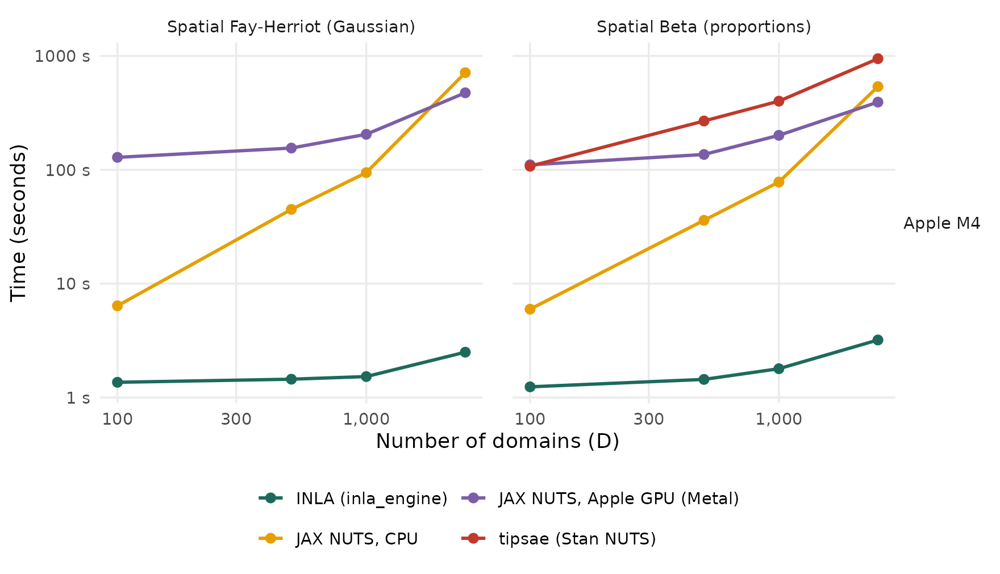

hb_area() Engines: INLA vs JAX (CPU, Apple GPU, CUDA) vs tipsae
Source:vignettes/articles/hb-area-engines.Rmd
hb-area-engines.Rmdhb_area() can be estimated by two engines:
-
inla_engine()(default): integrated nested Laplace approximation with INLA. -
jax_engine(): full MCMC with NumPyro’s No-U-Turn sampler on JAX. It runs on the CPU, on an NVIDIA GPU (device = "cuda") or on the GPU of Apple silicon (device = "metal").
The INLA times on this page were measured in INLA’s default
"compact" mode. Since fastsae 1.0.0, Gaussian models are
fitted in INLA’s "classic" mode, which is more accurate for
them (see the Engines section of ?hb_area) and took about
the same time in our checks; the other families still use the compact
mode.
This page compares the speed of both engines, on the CPU and on a GPU, and how closely their estimates agree. The comparison uses spatial area-level models. For the Beta model it also includes the tipsae package, which fits the same model by MCMC in Stan.
NVIDIA GPU (CUDA) results pending. They will be added here. They can be reproduced with the notebooks linked at the end of this page.
Setup
Models.
-
Data: a regular grid of
cells with queen adjacency, simulated by
sim_area_data(D = n, W = W, n_unsampled = 0, seed = 42 + n). -
Gaussian:
hb_area(y_gaussian ~ x1 + x2, spatial = "besag"), a Fay-Herriot model with an intrinsic CAR (Besag) area effect. -
Beta:
hb_area(y_beta ~ x1 + x2, family = "beta", spatial = "besag"). tipsae fits it withfit_sae(likelihood = "beta", spatial_error = TRUE), which also uses an ICAR effect.
tipsae is run for the Beta model only, up to .
| Machine | CPU | GPU | Software | Date |
|---|---|---|---|---|
| Apple M4 | Apple M4 (10 cores, 16 GB RAM) | Apple M4 | R 4.6.1; fastsae 1.0.0; INLA 26.8.7; tipsae 1.0.3; jax 0.5.0, jaxlib 0.5.0, jax-metal 0.1.1, numpyro 0.19.0 | 2026-10-14 |
Each engine runs in a separate R process, because JAX fixes its
device at the first fit of a session. Every fit is run 2 times on the
same data. The first run includes JAX compilation; the tables and figure
show the faster, warm run (the explorer can also show the first run).
JAX uses the jax_engine() defaults (2 chains × 1,000 draws
after 500 warmup), and tipsae uses its own defaults. The code is in benchmarks/bench_hb_area_engines.R.
Comparing machines. Times measured on different machines are not comparable with each other. The ratios within one machine are: GPU vs CPU, and INLA vs tipsae.
Computation time
Pick a model, a machine and the timing to show. Hover over a point for the time, the device and the R-hat of the fit.
Static figure (all machines)

Warm computation time (log scales). Lower is faster. One row per machine.
| Machine | Model | D | INLA | JAX CPU | JAX GPU | GPU vs CPU | tipsae | INLA vs tipsae |
|---|---|---|---|---|---|---|---|---|
| Apple M4 | Gaussian | 100 | 1.4 s | 6.4 s | 129 s (metal) | 20.1x slower | - | - |
| Apple M4 | Gaussian | 500 | 1.4 s | 45 s | 155 s (metal) | 3.5x slower | - | - |
| Apple M4 | Gaussian | 1,000 | 1.5 s | 94 s | 205 s (metal) | 2.2x slower | - | - |
| Apple M4 | Gaussian | 2,500 | 2.5 s | 713 s | 474 s (metal) | 1.5x faster | - | - |
| Apple M4 | Beta | 100 | 1.2 s | 6.0 s | 110 s (metal) | 18.5x slower | 107 s | 87x faster |
| Apple M4 | Beta | 500 | 1.4 s | 36 s | 136 s (metal) | 3.8x slower | 268 s | 186x faster |
| Apple M4 | Beta | 1,000 | 1.8 s | 78 s | 201 s (metal) | 2.6x slower | 401 s | 224x faster |
| Apple M4 | Beta | 2,500 | 3.2 s | 538 s | 393 s (metal) | 1.4x faster | 946 s | 296x faster |
The results:
- INLA is the fastest engine at every size. It does not sample. For example, on Apple M4 the spatial Gaussian model at takes 2.5 s.
- tipsae. At on Apple M4, tipsae takes 946 s for the spatial Beta model, INLA takes 3.2 s (296x faster), and JAX on the CPU takes 538 s. So the JAX engine on the CPU is 2x to 18x faster than tipsae on the sizes both ran.
- The JAX engine’s time grows quickly with for spatial models. It represents the ICAR effect through the eigenvectors of the graph Laplacian. Computing them costs once, and each gradient evaluation then costs . Dense matrix work of this kind is where a GPU helps.
-
CPU or GPU? On Apple M4 (Metal): the GPU is faster
from
for the Gaussian model, and the GPU is faster from
for the Beta model. The GPU has a fixed cost per fit (on Metal, every
pass through NUTS’ tree-building loop waits for the GPU and the CPU to
synchronise), so it pays off only once
is large.
jax_engine(device = "auto")uses CUDA when an NVIDIA GPU is present and the CPU otherwise, including on macOS.
Agreement of the estimates
Every engine is compared with INLA on the same machine and data.
cor is the correlation of the posterior means,
max |diff| is the largest absolute difference between them,
and sd ratio is the median ratio of the posterior standard
deviations (engine / INLA).
| Machine | Model | Engine | D | cor | max |diff| | sd ratio |
|---|---|---|---|---|---|---|
| Apple M4 | Gaussian | JAX CPU | 100 | 1.0000 | 0.02200 | 1.012 |
| Apple M4 | Gaussian | JAX CPU | 500 | 1.0000 | 0.01700 | 1.001 |
| Apple M4 | Gaussian | JAX CPU | 1,000 | 1.0000 | 0.01900 | 1.001 |
| Apple M4 | Gaussian | JAX CPU | 2,500 | 1.0000 | 0.01900 | 0.999 |
| Apple M4 | Gaussian | JAX Metal | 100 | 1.0000 | 0.01400 | 1.011 |
| Apple M4 | Gaussian | JAX Metal | 500 | 1.0000 | 0.01700 | 1.001 |
| Apple M4 | Gaussian | JAX Metal | 1,000 | 1.0000 | 0.02000 | 1.001 |
| Apple M4 | Gaussian | JAX Metal | 2,500 | 1.0000 | 0.01800 | 0.999 |
| Apple M4 | Beta | JAX CPU | 100 | 1.0000 | 0.00300 | 1.044 |
| Apple M4 | Beta | JAX CPU | 500 | 1.0000 | 0.00200 | 0.987 |
| Apple M4 | Beta | JAX CPU | 1,000 | 1.0000 | 0.00170 | 0.980 |
| Apple M4 | Beta | JAX CPU | 2,500 | 1.0000 | 0.00075 | 0.963 |
| Apple M4 | Beta | JAX Metal | 100 | 1.0000 | 0.00360 | 1.019 |
| Apple M4 | Beta | JAX Metal | 500 | 1.0000 | 0.00110 | 0.983 |
| Apple M4 | Beta | JAX Metal | 1,000 | 1.0000 | 0.00130 | 0.985 |
| Apple M4 | Beta | JAX Metal | 2,500 | 1.0000 | 0.00050 | 0.968 |
| Apple M4 | Beta | tipsae | 100 | 0.9939 | 0.08100 | 0.837 |
| Apple M4 | Beta | tipsae | 500 | 0.9992 | 0.06900 | 0.798 |
| Apple M4 | Beta | tipsae | 1,000 | 0.9991 | 0.03500 | 0.793 |
| Apple M4 | Beta | tipsae | 2,500 | 0.9999 | 0.04800 | 0.766 |
- JAX engines. On every device, the posterior means agree with INLA with correlations of at least 0.9999, and the same holds across devices. The GPU evaluates floating-point operations in a different order from the CPU, so the chains differ slightly, but they give the same estimates.
- tipsae. tipsae agrees with INLA with correlations of at least 0.993. Its posterior standard deviations are smaller (median ratio 0.77 to 0.84), probably because the two packages use different priors.
- Convergence. Over all JAX fits, the largest split R-hat is 1.007. For tipsae it is 1.083 (at on Apple M4), above the usual 1.05 threshold, so its default run length is not quite enough there.
Using a GPU
# One-time setup of the Python environment (CUDA on Linux/Windows, Metal on Apple silicon)
fastsae::setup_numpyro_env(device = "cuda") # or device = "metal"
# In a new R session: request the GPU before any other JAX fit
fit <- hb_area(y ~ x1 + x2, vardir = "vardir", data = df, spatial = "besag", W = W,
engine = jax_engine(device = "cuda"))
fit$deviceMetal. jax-metal does not implement two operations
used by NumPyro’s NUTS sampler: the bit count popcnt, and
some lax.cond statements with constant outputs. With
device = "metal", fastsae replaces both with equivalent
operations and samples the chains sequentially. If a model still cannot
be compiled on Metal, the fit falls back to the CPU with a warning.
Reproduce the CUDA results. Two notebooks install fastsae, INLA, tipsae and JAX with CUDA, then run the same benchmark:
-
Kaggle (recommended):
benchmarks/kaggle/hb_area_engines_kaggle.ipynb. Import it into a Kaggle notebook. It is a Python notebook, because Kaggle gives GPUs to Python notebooks, and it installs R itself. Choose a GPU accelerator and turn the internet on. Then use Save & Run All, which runs the whole benchmark on Kaggle’s servers without the browser open. -
Google Colab:
benchmarks/colab/hb_area_engines_colab.ipynb. Choose an R runtime with a T4 GPU and run all cells. Keep the tab open until the run finishes.
In short:
- For most surveys (hundreds to a few thousand domains),
inla_engine()is the fastest choice. - For full MCMC, the JAX engine on the CPU alone is faster than Stan via tipsae: 2x to 18x here, with the gap narrowing as grows.
- A GPU becomes worthwhile for the JAX engine on large spatial models.